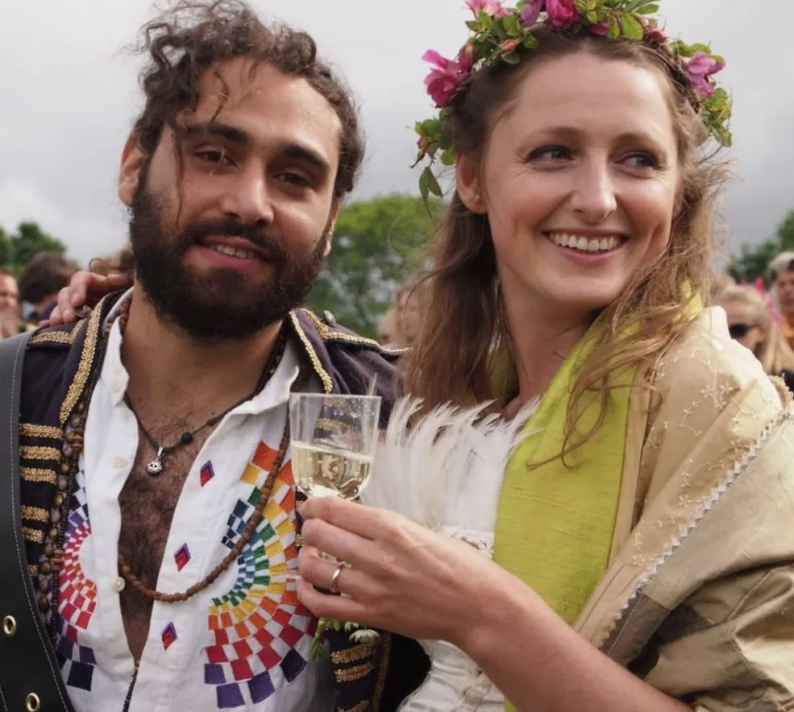

III
Your hosts
Carlo and Jessie
Carlo
Born in Siracusa, into a family of guides who know every stone of this land. Carlo began as a professional breakdancer, then became a bee specialist. Today he is a historical guide who has spent his life studying the traditions of the table, from the Sicilian Sunday lunch to ancient table customs from all over the world.
Jessie
An artist, and a keeper of the old uses of the plants of this land, for food, craft and medicine.
Together
For many years we worked to protect bees and pollinators. That work won many awards. We were invited to Buckingham Palace to be celebrated by Queen Elizabeth II, and named among the best social entrepreneurs in the UK.
Today we live off-grid by the river, and every day we open our home and our table.